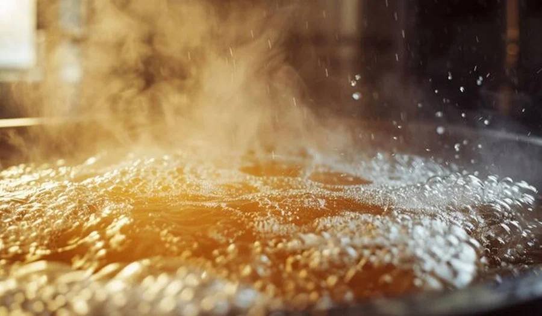

ДАЙДЖЕСТ / BODREEVSHOW
Температура брожения

Контроль температуры ферментации
Регулирование температурного режима во время ферментации – критически важный аспект пивоварения, требующий доработки для повышения качества готового напитка. Поддержание оптимальных температур брожения представляет собой серьезную трудность, особенно в условиях жаркого климата южных регионов. Если зимой пивоварение может быть успешным, то летом, при температуре воздуха до +40°C, этот процесс становится крайне проблематичным. Без должного контроля температуры практически невозможно произвести пиво надлежащего качества. Многие домашние пивовары не придают должного значения этому нюансу, обрекая себя на неудачи. Среди ключевых проблем, возникающих при слишком высокой температуре ферментации, стоит отметить:
Основное затруднение кроется в появлении посторонних оттенков вкуса, обусловленных формированием сложных эфиров и сивушных масел. Эти вещества образуются в результате жизнедеятельности дрожжей при интенсивных процессах ферментации, протекающих при повышенных температурах. В некоторых случаях подобные вкусовые характеристики могут совершенно не соответствовать вашим предпочтениям относительно определенного сорта пива.
Дрожжи способны к стремительному началу активности, поглощая имеющиеся субстраты, но впоследствии могут замедлить свою жизнедеятельность из-за истощения пищевых компонентов. Это часто приводит к тому, что значительная часть сахаров остается непереработанной, и процесс брожения не завершается полностью.
Неудовлетворительный контроль температурного режима во время брожения нередко ведет к его перегреву. Это, в свою очередь, провоцирует повышенную чувствительность дрожжевых клеток к этанолу, что приводит к их преждевременной гибели, еще до достижения ими обычного уровня отмирания.
Тепловой удар приводит к гибели дрожжевых клеток, и выжившие вынуждены брать на себя всю нагрузку. Это ведет к снижению плотности дрожжевого осадка и, как следствие, к появлению нежелательных привкусов в готовом продукте.
В процессе жизнедеятельности дрожжевых клеток генерируется значительное количество тепла. По этой причине начальные этапы брожения при высоких температурах сопряжены с трудностями, поскольку температурный режим может перейти отметку в 30 °С, что негативно сказывается на жизнеспособности дрожжей, вызывая их гибель.
При производстве пива в условиях низких температур или зимой, когда отсутствует надлежащий контроль за процессом ферментации, дрожжи могут испытывать негативное воздействие. Зимний период традиционно благоприятен для пивоварения, поскольку в это время года снижается активность патогенных микроорганизмов и диких дрожжей, с которыми пивовар вынужден постоянно бороться. Однако для неопытных домашних пивоваров чрезмерно низкие температуры на этапе брожения могут обернуться рядом трудностей:
Ваши дрожжи могут и вовсе не приступить к брожению.
Брожение может протекать чрезвычайно медленно и затянуться на несколько недель, после чего внезапно прекратиться.
В элях, где ожидается присутствие фруктовых эфиров, избыточно низкая температура брожения может привести к их полному отсутствию, что даст чрезмерно чистый или приглушённый вкус, не соответствующий заданному стилю. Дегустаторы будут искать характерные ароматы и вкусы, которых в таком пиве попросту нет из-за слишком холодного брожения.
Если в начале процесса брожение идёт слишком медленно, а контроль температуры нарушен, это создаёт благоприятные условия для доминирования вредных микроорганизмов, которые со временем могут полностью испортить партию пива.
При низкой температуре брожения углекислый газ (СО₂) хуже выходит из раствора. Ароматы, как правило, удаляемые вместе с газом, остаются в пиве на протяжении всего процесса и могут сохраниться в финальном продукте. Особенно это касается «сернистых» привкусов и ароматов, характерных для низкотемпературного брожения.
Каковы варианты? Что нужно предпринять для контроля температуры брожения? Прежде чем включить управление температурой процесса брожения, необходимо точно установить её значение. Существует несколько способов определить нужный показатель.
Погружной зонд с термодатчиком точно покажет температуру брожения, обеспечивая наиболее достоверный способ контроля и регулирования температурного режима при брожении сусла.
Или воспользуйтесь регулировкой температуры с помощью цифрового термоконтроллера с датчиком температуры. Устанавливайте нужную температуру брожения пива, а не комнатную температуру внутри холодильника (которая может отличаться). Для этого прикрепите датчик скотчем к поверхности ёмкости для брожения, а сверху закройте его плотной тканью для изоляции.
Измерить температуру можно с помощью обычного бытового термометра — цифрового устройства с датчиком. Оно подходит для отслеживания показателей окружающей среды внутри холодильника. Разместите блок управления снаружи, а датчик — внутри. В этом случае показания, отображаемые снаружи, будут соответствовать температуре воздуха внутри холодильной камеры.
Чем выше качество термометра, тем точнее его показания. Я помещаю проверяемый прибор внутрь и сверяюсь с более бюджетным внешним/внутренним термометром — в моём случае расхождение составляет один градус. Я просто учитывал это при контроле температуры.
В вашем локальном магазине, специализирующемся на оборудовании для домашнего пивоварения, скорее всего, можно приобрести термометр-наклейку для контроля температуры во время брожения. Хотя этот прибор не отличается высокой точностью, он все же является полезным подспорьем, когда других измерительных средств под рукой нет.
Для контроля температуры процесса брожения рекомендуются термометры, заполненные жидкостью, которые размещаются в холодильной установке. Принцип их действия основан на том, что жидкость изменяет свою температуру значительно медленнее по сравнению с воздухом в холодильнике, особенно в условиях активного брожения.Даже если дверца холодильника останется открытой на некоторое время, например, для взятия проб для измерения плотности сусла, такой термометр продолжит демонстрировать стабильные показания, отражая реальную температуру внутри бродильного аппарата.Использование термометра, содержащего жидкость, обеспечивает более точное измерение температуры пивного сусла по сравнению с обычными моделями. Это связано с тем, что сам термометр, будучи заполненным жидкостью, создает условия, аналогичные условиям внутри ферментера, тем самым минимизируя погрешности измерений, связанные с резкими колебаниями температуры внешней среды.
Освоив контроль над температурным режимом, вы можете перейти к практическим методам поддержания оптимальной температуры вашего процесса брожения.
Холодильное или морозильное оборудование. Наиболее часто применяется дополнительный холодильник или морозильная камера. Так как для процесса брожения требуется более высокая точность поддержания температуры, чем может обеспечить стандартный бытовой холодильник, потребуется изменить его систему терморегуляции. Самым простым решением будет использование аналогового или цифрового электронного термостата-контроллера.
Для снижения температуры вашей бродильной емкости вы можете использовать метод испарительного охлаждения. Поместите ферментер в ванну или большую емкость с водой. Оберните емкость старыми футболками или полотенцами, которые будут постепенно увлажняться водой из ванны и испаряться. Этот процесс создает стабильный охлаждающий эффект. Для усиления охлаждения можно добавить вентилятор, направленный на влажную ткань. Такой подход способен понизить температуру брожения на несколько градусов. Единственным неудобством является необходимость использования ванны на протяжении нескольких недель. Я убежден, что множество превосходных элей было получено с использованием данного метода охлаждения!
Ледяная ванна — это простой метод охлаждения сусла. Заполните емкость льдом вместо воды. Как вариант, вы можете использовать изолированный контейнер, поместив в него бродильную емкость и лед. Этот метод не позволяет точно контролировать температуру, которая будет зависеть от количества льда. Тем не менее, он эффективно помогает поддерживать температуру брожения в нижнем диапазоне для большинства элевых дрожжей, приблизительно 13–16 °C.
Контроль температуры на этапе брожения , пожалуй, является ключевым фактором для повышения качества вашего пива . Если вы уже добились безупречной санитарии и отточили технику пивоварения, то большинство нежелательных привкусов и ароматов в напитке, скорее всего, вызваны несоблюдением температурного режима брожения.
Эль, ферментированный при чрезмерно высокой температуре, может приобрести неприятные нотки сивушных масел и излишне фруктовые эфиры, что совершенно неуместно для определенного стиля пива. Несмотря на то, что дрожжи предпочитают тепло, и процесс брожения ускоряется, конечный вкус и аромат вашего пива значительно пострадают.
Аналогичная ситуация складывается и при брожении лагеров . Без должного контроля за температурой вы просто не сможете воспроизвести многие из лучших сортов пива, существующих в мире. Я предполагаю, что вы пока не располагаете специализированным холодильником для брожения. Его стоит приобрести раньше, чем многие другие дорогостоящие приспособления для домашнего пивоварения, представленные на рынке. В результате вы будете варить превосходное пиво, а ведь именно в этом и заключается главная цель, не так ли?